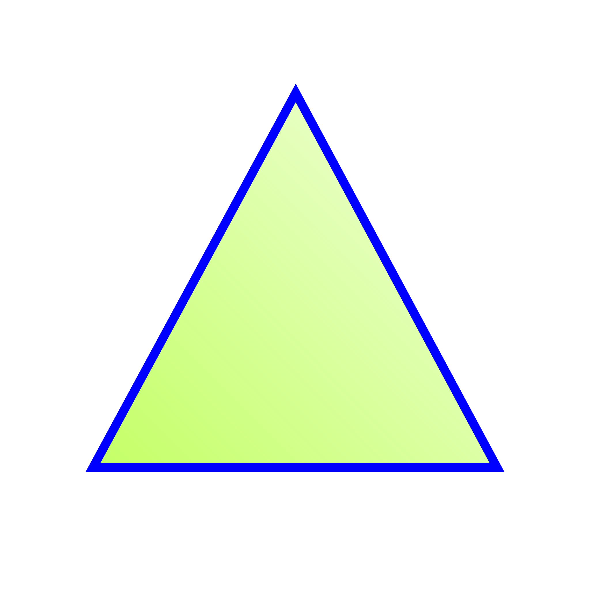
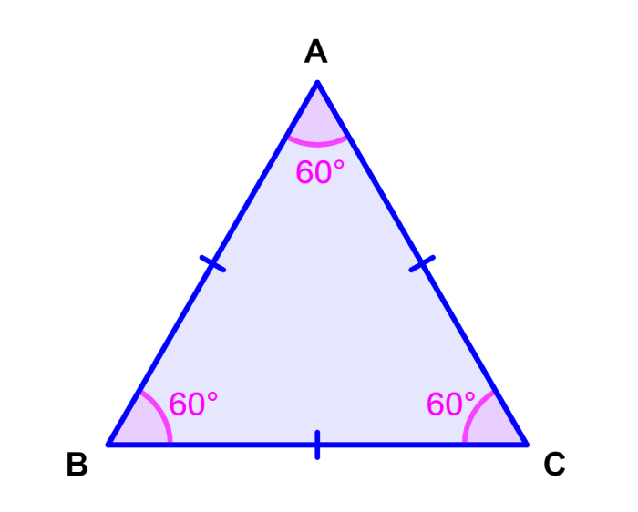
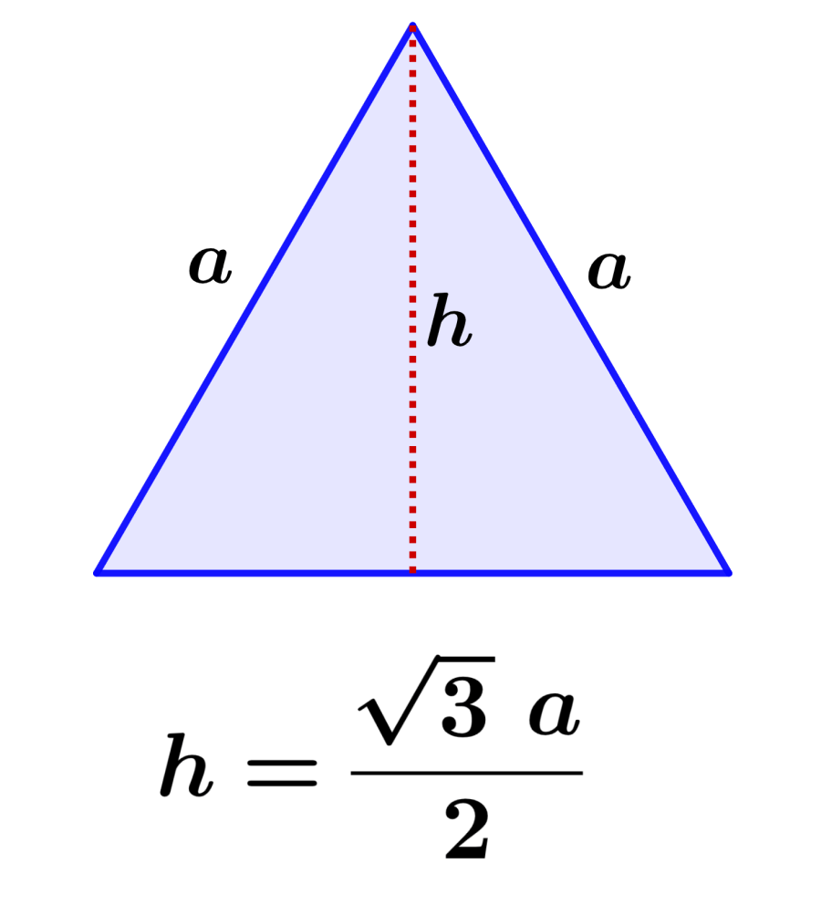
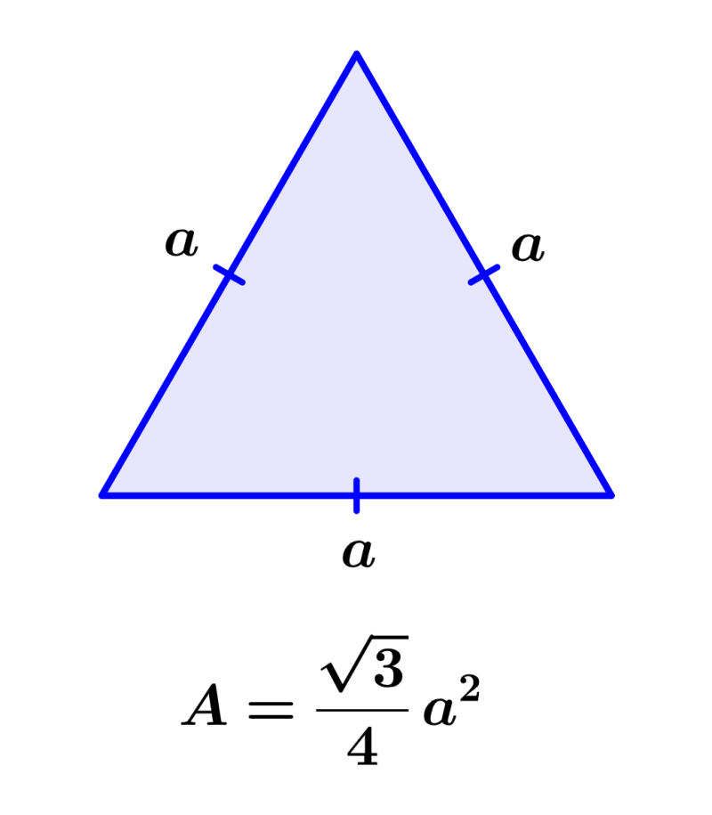

Equilátero
Un triángulo equilátero es un tipo de triángulo en el cual todos sus lados tienen la misma longitud y todos sus ángulos internos miden 60 grados. Es decir, es un triángulo regular.

Características principales del triángulo equilátero:
- Lados: Todos los lados del triángulo equilátero tienen la misma longitud. Si llamamos "l" a la longitud de cada lado, entonces los tres lados del triángulo miden "l".
- Ángulos: Los tres ángulos internos del triángulo equilátero miden 60 grados cada uno.

- Altura: La altura de un triángulo equilátero es una línea perpendicular a uno de sus lados y que pasa por el vértice opuesto. En un triángulo equilátero, la altura coincide con la mediana y la bisectriz, y divide al triángulo en dos triángulos congruentes.

- Perímetro: El perímetro de un triángulo equilátero se obtiene sumando las longitudes de sus tres lados. Si "l" representa la longitud de cada lado, entonces el perímetro del triángulo equilátero es igual a 3l.
- Área: El área de un triángulo equilátero se puede calcular utilizando la fórmula: Área = (l^2 * √3) / 4, donde "l" es la longitud de cada lado. Esto implica que el área de un triángulo equilátero es proporcional al cuadrado de la longitud de sus lados.

- Simetría: El triángulo equilátero tiene múltiples ejes de simetría. Puede ser rotado 120 grados en cualquier dirección y seguirá siendo el mismo triángulo.
El triángulo equilátero es una figura geométrica básica y se utiliza en muchos contextos matemáticos y aplicaciones prácticas, como en la construcción, la trigonometría y la geometría analítica. Además, forma parte de la familia de polígonos regulares junto con el cuadrado, el hexágono regular y otros polígonos que tienen todos sus lados y ángulos iguales.